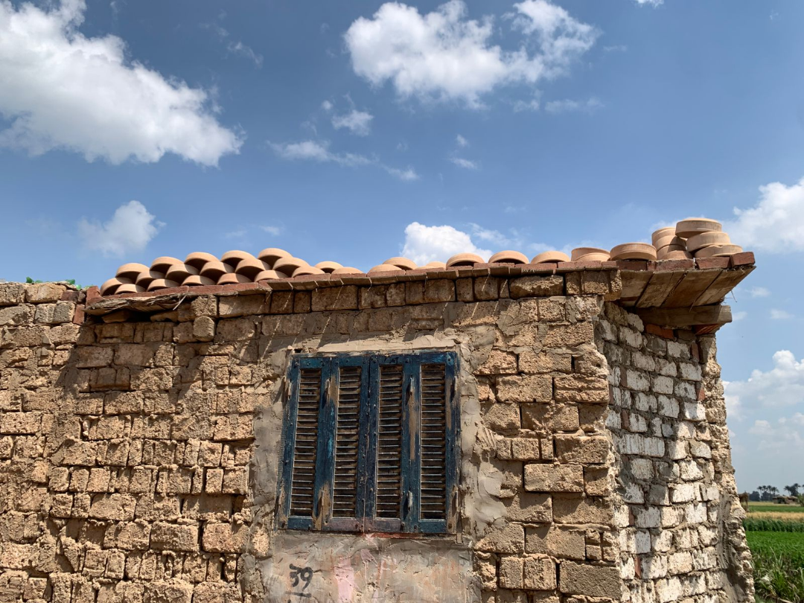

رحلة طويلة ومعقدة تبدأ من جنوب مصر، حيث تُستخرج الخامات، وتنتهي في ورش صغيرة بقرية الفرستق، حيث تتحول إلى منتجات فخارية تستخدم يوميًا في البيوت المصرية.
من أسوان إلى الفرستق
تبدأ عملية تصنيع الفخار بجلب البودرة الخام من محافظة أسوان، ثم وضعها في أحواض المياه وخلطها جيدًا حتى تتحول إلى عجينة لينة، تترك بعد ذلك لفترة تخمير لتحسين جودتها. بعد هذه المرحلة، يتم إدخال العجينة إلى ماكينات خاصة لتجهيزها، قبل أن تبدأ عملية التشكيل اليدوي، والتي تتطلب مهارة عالية وخبرة طويلة، حيث يستغرق تعلمها ما لا يقل عن عام.
التشكيل.. مهارة تُكتسب بالسنين
وتُعد مرحلة التشكيل من أسرع المراحل، إذ يمكن للحرفي تشكيل "القلة" خلال دقائق قليلة، لكن باقي المراحل مثل التجفيف والحرق تستغرق وقتًا أطول. وتُعرض القطع بعد التشكيل لأشعة الشمس حتى تجف، ثم يتم إدخالها إلى الأفران على مرحلتين، بدرجات حرارة مرتفعة، للحصول على الشكل النهائي الصلب.
"الحرفي المتمرس يمكنه تشكيل القلة في دقائق معدودة، لكن الصبر والخبرة هما ما يميز المنتج الجيد عن غيره."
تحديات تهدد الاستمرار
ورغم بساطة المنتج النهائي، فإن تكلفة إنتاجه تتأثر بعدة عوامل، منها أسعار الخامات، واستهلاك الطاقة، وأجور العمالة، ما ينعكس على السعر النهائي للمستهلك. كما أن اقتصار بيع المنتجات على السوق المحلي فقط، دون تصدير، يقلل من فرص نمو هذه الصناعة، خاصة في ظل الطلب العالمي المتزايد على المنتجات اليدوية والتراثية. إضافة إلى ذلك، يشكل غياب الدعم المؤسسي والتدريب المهني عائقًا أمام تطوير المهنة.

مستقبل يحتاج إلى إحياء
تبقى صناعة الفخار نموذجًا لصناعات تقليدية تحتاج إلى إعادة إحياء، من خلال دعم الحرفيين، وتطوير أساليب الإنتاج، وفتح أسواق جديدة، بما يضمن استمرارها كجزء من الهوية الثقافية المصرية.


أترك تعليقاً...